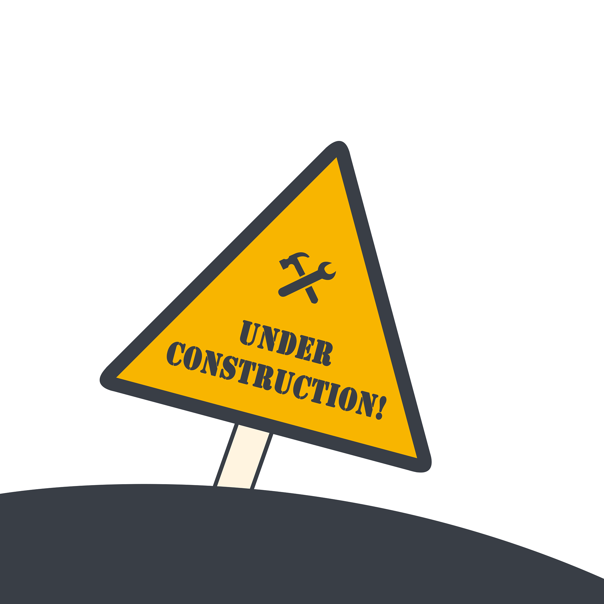

Diese Website
September 2026Meine persönliche Seite, geschrieben in reinem HTML und CSS ohne Framework. Sie dient nur dazu, ein kleines Portfolio von den Dingen die ich aktuell mache darzustellen.
Dinge, die ich gebaut habe, um etwas Neues zu lernen.
Meine persönliche Seite, geschrieben in reinem HTML und CSS ohne Framework. Sie dient nur dazu, ein kleines Portfolio von den Dingen die ich aktuell mache darzustellen.
Ich habe die Möglichkeit bekommen über drei Semester hinweg die Teamleitung für das RLM-Projekt zu übernehmen. Im Zuge dessen hat unser Team aus 11 Studentinnen und Studenten einen autonomen Rasenmäher-Roboter-Prototyp entwickelt, welcher eine Reihe an Soft- und Hardware-Features bietet. Der Roboter erkennt ein elektrisches Begrenzungs-Kabel durch eine selbst konzipierte Transistorschaltung, weicht durch KI-Objekterkennung welche per YOLOv26 (Ultralytics) trainings-library trainiert wurde Hindernissen wie Igeln aus und fährt mit eigener Fahrlogik auf Arduino und Raspberry Pi selbstständig. Gesteuert und überwacht wird er über die Web-App „MowerOS“, und eine eigene CI/CD-Pipeline auf Forgejo sichert die Qualität des Codes. Gemessene Daten werden hierbei über eine Datenbanksynchronisation auf einen selbst gehosteten Proxmox Container Synchronisiert.
